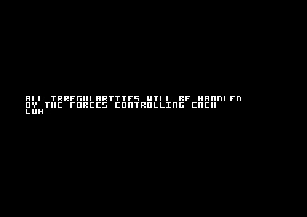
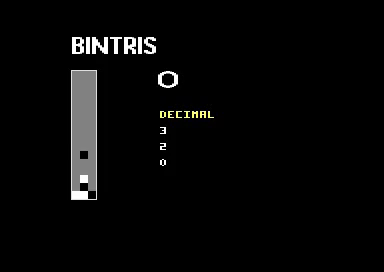
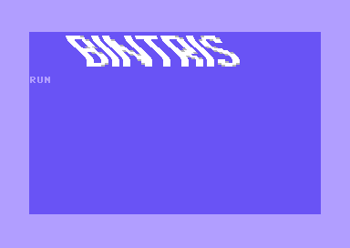

BINTRIS C64: Bad lines and flexible line distance (series part 5)
(Looking for the BINTRIS C64 disk image? Find it here.)
Introduction
This post discusses how BINTRIS uses YSCROLL manipulation to implement bad line suppression and full-screen vertical scrolling (flexible line distance, or FLD).
Here are the effects in action:
Vertical scrolling.
 BINTRIS logo warp effect.
Note: all timing values in this post are for specific to PAL-B C64 models.
Bad Lines
To understand FLD, you need to grasp the concept of Bad Lines. I’ll summarize Bad Lines here but you can read about it in more detail in the excellent vic-ii.txt document (section 3.5). The same document also explains FLD in section 3.14.2.
The VIC scans out the video frame line-by-line. Each line takes exactly 63 clock cycles. On normal lines, all these 63 cycles are available to the CPU. However, on every 8th pixel row (=start of a new character row), the VIC needs an extra 40 cycles to fetch a line of character codes from memory. When these fetches start, the CPU is “stunned”, meaning it won’t execute for about 40-43 clock cycles. These lines are called Bad Lines. On these lines, you have only 20-23 clock cycles to spend on your raster magic. With sprites, even less.
This might not be a big deal with timing insensitive code. But since the C64 is all about carefully crafted raster code, bad lines are something you just have to deal with.
To illustrate bad lines, I made this little interactive chart that shows the effect of bad lines. The little green boxes at the bottom represent the 63 cycles you have for a single line. The currently executing cycle is highlighted in white. A white dot over the C64 image is the raster beam. On normal lines, the CPU runs instructions on every cycle. But on bad lines, the CPU is stunned (black boxes) and cannot execute instructions.
When do the bad lines occur? Here’s the bad line condition in pseudo code:
if (RASTER >= $30 && RASTER <= $f7) {
if ((RASTER & 7) == YSCROLL) {
// BAD LINE
}
}where RASTER is the current scanline register ($d011/$d012) and YSCROLL is the vertical scroll register (bits 0-2 of $d011). (See the C64 memory map for details on these registers.)
Notice how the bad line condition depends on the YSCROLL register. Turns out, you can suppress or delay bad lines by manipulating the YSCROLL value at the right time. Recall the (RASTER&7)==YSCROLL condition. If, at the beginning of a line, you set the YSCROLL to a value that doesn’t match the lowest 3 bits of the current line, the bad line will not happen. On such lines, VIC has nothing to render (as we just tricked it to not fetch character codes) and it will render the last byte of the video memory instead (e.g., contents of $3fff)
Let’s see what we can do with this technique.
Flexible Line Distance (FLD)
Flexible line distance is a technique that uses bad line suppression to scroll the display down by an arbitrary number of lines. I use it in the BINTRIS to scroll the whole screen down when leaving the writer part.
To scroll by N lines, simply trigger a raster IRQ at the top of the screen (say on line 46) and suppress N bad lines. Here’s how you might do this in C-like pseudo code:
// YSCROLL is mapped to $d011
// RASTER is mapped to $d012
while(!new_frame()) {
// do nothing
}
YSCROLL = 0x1B; // default YSCROLL value (%111)
// wait for FLD start line
while (RASTER != 0x40) {
// do nothing
}
for (int i = 0; i < num_fld_lines; i++) {
uint8_t cur_raster = RASTER;
// wait for next next line
while (cur_raster == RASTER) {
// do nothing
}
// skip over bad line by manipulating YSCROLL
YSCROLL = ((YSCROLL + 1) & 7) | 0x18;
}I found working FLD code in 6502 assembly from codebase64.org. I tested it by porting it to KickAssembler and running it on VICE.
Skipping Bad Lines
As discussed above, it’s possible to vertically scroll down the whole screen by manipulating the YSCROLL register at appropriate times. However, vertical scrolling is not the only reason why you might want to skip bad lines. Recall from the Bad Lines section that on a bad line, the CPU can run only 20-23 cycles worth of machine code. (NB: although many tutorials say that you have 23 CPU cycles on a bad line, in practice you really only have 20-22 cycles to work with. I might write a separate article about this topic later on.)
The situation gets even worse if there are any sprites on a bad line. Also, the more sprites you have, the fewer CPU cycles are available. Here’s a simplified formula for evaluating how many cycles you can spend on a bad line with sprites:
num_cycles = 23 − (3 + 2 * num_sprites)
(NB: This is a bit simplified, see Missing Cycles for details.)
Let’s say you have enabled sprites 0-3 and they all hit a bad line. Now you have only 12 cycles to spare on your fancy raster routine (or in practice, more like 10 cycles.)
Ten cycles is not a much. For example, say you want to load and store some values. Here’s all you can run during a single bad line:
LDA abs_addr (4 cycles)
STA abs_addr (4 cycles)
NOP (2 cycles)The logo warp effect in BINTRIS is implemented using sprites by encoding the logo pixels into 4 separate sprites. The line-by-line warp is implemented by setting the x-coordinate of each sprite to a new value on every raster line the logo spans. Here’s a close up of this effect:
To set the the horizontal location of each sprite, we’d need to do this for every raster line the sprites span:
// At the beginning of a raster line
.for (var y 0; y < 21; y++) {
lda spritex + y*4 + 0 // sprite 0 x-coord
sta $d000+0
lda spritex + y*4 + 1 // sprite 1 x-coord
sta $d000+2
lda spritex + y*4 + 2 // sprite 2 x-coord
sta $d000+4
lda spritex + y*4 + 3 // sprite 3 x-coord
sta $d000+6
// + waste cycles until we're at the beginning of the next
// raster line
}That’s 32 CPU cycles per line. The sprites fall on a few bad lines and on these scanlines there’s only 10 cycles to spare. Sure, it’s possible to optimize the sprite x-coordinate stores down to 24 cycles with self-modifying code but 10 cycles doesn’t seem possible.
Without bad lines, there’s 52 cycles (=63-11 to account for 4 sprites) per scanline which is more than enough to move all the four sprites horizontally.
If only there were no bad lines..
You guessed it, right? If bad lines are suppressed for the duration of the logo, there will be plenty of cycles to move the sprites. Bad line suppression can be done by manipulating the YSCROLL register just as we did with FLD:
// Note: waste_cycles(c) is a macro that inserts the right
// amount of NOPs and BITs to burn 'c' clock cycles.
.for (var y = 0; y < 21; y++) {
.var cycles = 63
// skip bad line with FLD
.var rasty = SPRITE_LOGO_YSTART + y
.eval cycles = cycles - 3 - 8 // sprite overhead
// Suppress bad line
lda #$18 | ((rasty+1) & %111)
sta $d011
.eval cycles = cycles - 6
lda spritex + y*4 + 0
ldx spritex + y*4 + 1
ldy spritex + y*4 + 2
.eval cycles -= 3*4
sta $d000+0
stx $d000+2
sty $d000+4
.eval cycles -= 4*3
lda spritex + y*4 + 3
sta $d000+6
.eval cycles -= 8
waste_cycles(cycles)
}If you’re interested in playing with the sprite warp, I pushed its standalone source code up on github. Here’s how it looks like:

Next in series
My next BINTRIS post will wrap up the article series.
All posts in this series: